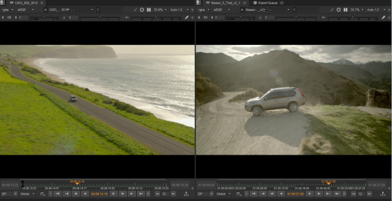
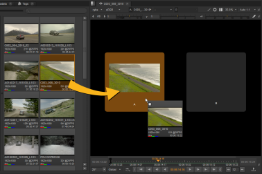
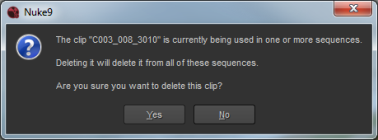

Clip Viewers, sometimes referred to as source Viewers, are marked with the icon and deal exclusively with source clips. You can set In and Out points and apply tags to the Viewer, but the source clips are unaffected.
Sequence Viewers, also known as record Viewers, are marked with the icon and deal with sequences and clip instances on the timeline. You can set In and Out points and apply tags here too, but you can also edit the clip instances on the timeline by trimming, retiming, and so on. See Timeline Editing Tools for more information.
The Editing workspace combines both clip and sequence Viewers by default, enabling you to add source clips to the timeline using insert and overwrite functions. See Insert, Overwrite, and 3-Point Editing for more information.

To view your media in a Viewer, simply drag-and-drop a clip or sequence from the Project tab on to a Viewer input, or double-click the item to send it to the appropriate Viewer.
NOTE: The Viewer currently treats all alpha channels as premultiplied, which can result in the Viewer background being “added” to the image. If you’re working with un-premultiplied images, set the Viewer background to Black.
See Appendix A: Preferences for more information.

To remove media from the bin view, select the clip(s) or bin and press Backspace or Delete.
If any of the media is in use in a sequence, the following warning displays:

Click Yes to delete the media from the bin view, but bear in mind that all instances of the deleted media are removed from your current sequences.
|
|